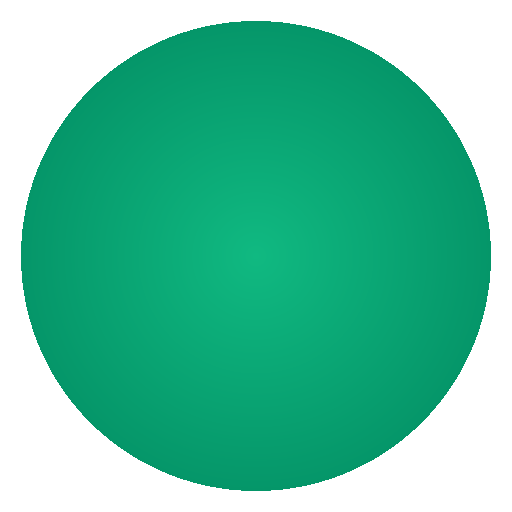

养生助手 图标对比
参考图片 vs 当前实现 vs 旧版设计
三方对比
参考图片
用户上传参考
- 纯白 + 暖黄外发光背景
- 深绿渐变大叶，叶尖朝右上
- 浅绿小叶，左侧位置
- 底部浅绿色翻边
- 金色露珠，正下方
- 柔和底部投影
当前实现

实际生成 PNG
- 512×512 像素
- 纯白背景 + 暖黄外发光
- 深绿→浅绿渐变
- 浅绿小叶子
- 底部翻边效果
- 金色露珠
旧版设计
心形 + 对勾
- 青色渐变背景
- 白色心形填充
- 青色对勾
- 通用健康风格
设计细节对比
参考图片特征
| 背景形状 | 圆角方形（110px圆角） |
| 背景颜色 | 纯白 + 暖黄色外发光 |
| 大叶子 | 深绿→浅绿渐变，叶尖朝右上 |
| 翻边 | 底部浅绿色翻边效果 |
| 小叶子 | 浅绿薄荷色，左侧位置 |
| 露珠 | 金色圆形，叶子正下方 |
| 阴影 | 底部柔和投影 |
| 叶脉 | 白色细线，主脉+侧脉 |
当前实现特征
| 背景形状 | 圆角方形（110px圆角） |
| 背景颜色 | 纯白 + 暖黄色外发光 |
| 大叶子 | 深绿→浅绿渐变，叶尖朝右上 |
| 翻边 | 底部浅绿色翻边效果 |
| 小叶子 | 浅绿薄荷色，左侧位置 |
| 露珠 | 金色圆形，叶子正下方 |
| 阴影 | 底部柔和投影 |
| 叶脉 | 白色细线，主脉+侧脉 |
背景色
#FFFFFF
大叶子深绿
#1E6B42
大叶子浅绿
#57B586
翻边色
#A8DFBC
小叶子
#D4F0DE
露珠
#E6A817
✅ 一致性检查通过
当前实现与参考图片在设计元素、配色方案、布局结构上保持一致：
- 背景：纯白 + 暖黄外发光 ✅
- 大叶子：深绿渐变，叶尖朝右上 ✅
- 翻边：底部浅绿色翻边效果 ✅
- 小叶子：浅绿薄荷色，左侧位置 ✅
- 露珠：金色圆形，叶子正下方 ✅
- 阴影：底部柔和投影 ✅